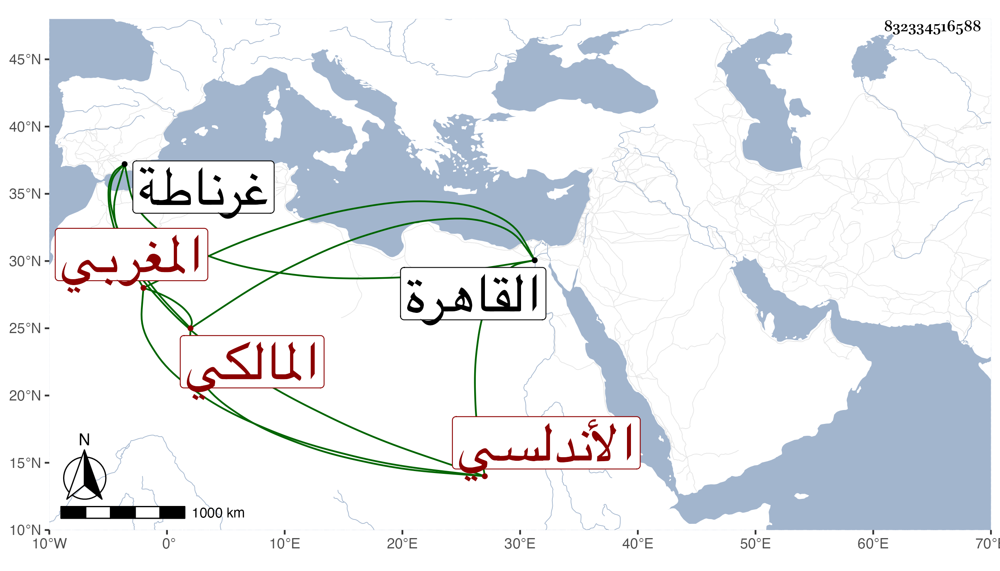

0902Sakhawi.DawLamic.ITO20230111-ara1.EIS1600.832334516588
Biography ID: 832334516588
1018
محمد بن أحمد بن خلد بن خلد الشمس أبو عبد الله الخمي الأندلسي المغربي المالكي نزيل الجمالية ثم الصالحية ويعرف بابن خلد . ولد في ليلة السبت سابع عشر رمضان سنة ثمان وتسعين وسبعمائة بغرناطة وقرأ القرآن ثم قدم القاهرة في سنة تسع وعشرين فحج وقطنها ولازم فيها بعض الشيوخ وسمع على شيخنا رفيقا لصاحبه الراعي وغيره وتنزل في بعض الجهات وكان خيرا ذاكرا لنوادر . مات بعد الستين .
